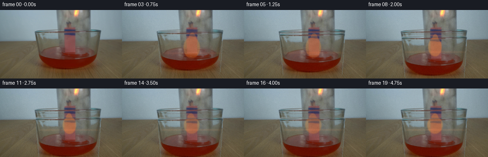
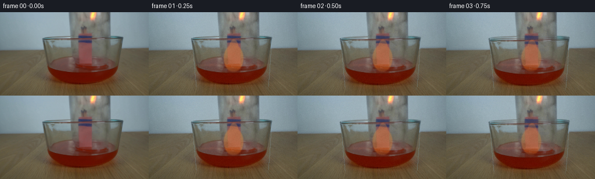
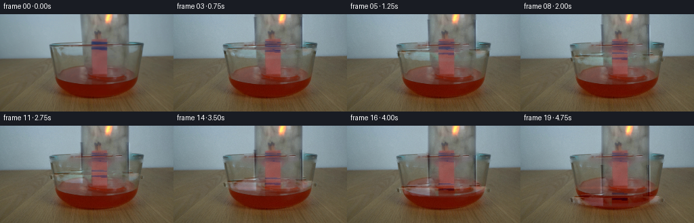
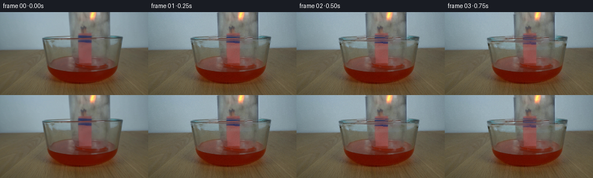
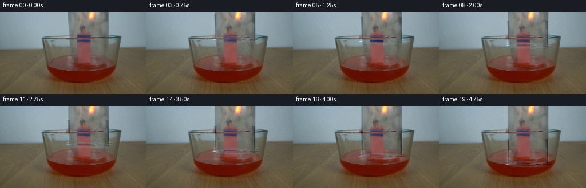
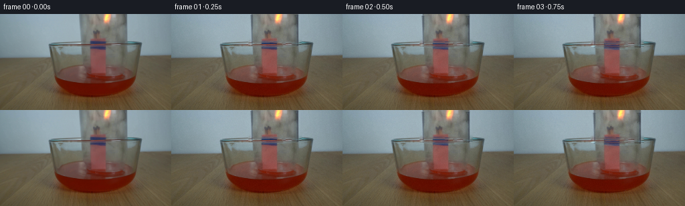

CODING AGENTS AS PIXEL WORLD MODELS
traex/DeepSeek-V4.1-Flash · 0164
点击播放 · 原生 RGB 像素
逐轮保存的候选
回放视频、检查图与代码变化。
每份候选均可单独播放。实际图片检查记录在下方工具轨迹中。
候选 01播放与检查图
点击播放 · 原生 RGB 像素


展开代码变化
--- 上一保存版本
+++ 本次保存版本
@@ -0,0 +1,160 @@
+from pathlib import Path
+
+import cv2
+import numpy as np
+from PIL import Image
+
+import artifact_io
+
+
+ROOT = Path(__file__).resolve().parent
+N_FRAMES = 20
+WIDTH = 256
+HEIGHT = 144
+
+
+def smoothstep(a, b, value):
+ value = np.clip((value - a) / (b - a), 0.0, 1.0)
+ return value * value * (3.0 - 2.0 * value)
+
+
+def soft_ellipse(x, y, cx, cy, rx, ry, feather=2.0):
+ radius = np.sqrt(((x - cx) / rx) ** 2 + ((y - cy) / ry) ** 2)
+ return 1.0 - smoothstep(1.0 - feather / max(rx, ry), 1.0 + feather / max(rx, ry), radius)
+
+
+def glass_mask(shape):
+ h, w = shape
+ y, x = np.mgrid[:h, :w].astype(np.float32)
+ # The jar's visible body and shoulder, fitted to the turquoise edge in the
+ # supplied frame. The lower part is open and overlaps the bowl.
+ profile = np.maximum(y - 48.0, 0.0)
+ left = 75.0 + 0.012 * profile**1.42
+ right = 211.0 - 0.010 * profile**1.42
+ body = (y >= 42.0) & (x >= left) & (x <= right)
+ shoulder = soft_ellipse(x, y, 143.0, 43.0, 68.0, 13.0, feather=2.0)
+ top = smoothstep(37.0, 46.0, y)
+ bottom = 1.0 - smoothstep(123.0, 136.0, y)
+ mask = np.maximum(body.astype(np.float32), shoulder * 0.9)
+ mask *= top * bottom
+ return np.clip(mask, 0.0, 1.0)
+
+
+def red_mask(image):
+ rgb = image.astype(np.float32)
+ r, g, b = rgb[..., 0], rgb[..., 1], rgb[..., 2]
+ mx = rgb.max(axis=2)
+ mn = rgb.min(axis=2)
+ sat = mx - mn
+ y, _ = np.mgrid[: image.shape[0], : image.shape[1]]
+ mask = (r > g * 1.34 + 5.0) & (r > b * 1.48 + 4.0) & (sat > 28.0) & (y > 72.0)
+ return mask.astype(np.float32)
+
+
+def shifted_layer(image, mask, dx, dy):
+ """Move a masked layer with a one-pixel anti-aliased edge."""
+ h, w = image.shape[:2]
+ m = cv2.GaussianBlur(mask, (0, 0), 0.62)
+ m = np.clip(m, 0.0, 1.0)
+ map_x = np.broadcast_to(
+ (np.arange(w, dtype=np.float32) - np.float32(dx))[None, :], (h, w)
+ ).copy()
+ map_y = np.broadcast_to(
+ (np.arange(h, dtype=np.float32) - np.float32(dy))[:, None], (h, w)
+ ).copy()
+ moved = cv2.remap(
+ image,
+ map_x,
+ map_y,
+ interpolation=cv2.INTER_CUBIC,
+ borderMode=cv2.BORDER_REFLECT_101,
+ )
+ moved_mask = cv2.remap(
+ m,
+ map_x,
+ map_y,
+ interpolation=cv2.INTER_LINEAR,
+ borderMode=cv2.BORDER_CONSTANT,
+ borderValue=0,
+ )
+ return moved, moved_mask
+
+
+def render_frame(base, frame_index):
+ t = frame_index / (N_FRAMES - 1)
+ eased = smoothstep(0.0, 0.68, t)
+ drop = 20.0 * eased
+ image = base.astype(np.float32)
+ h, w = image.shape[:2]
+ y, x = np.mgrid[:h, :w].astype(np.float32)
+
+ gmask = glass_mask((h, w))
+ red = red_mask(base)
+ lower_red = red * smoothstep(74.0, 96.0, y)
+
+ # The glass body moves down and closes over the bundle. Its transparent
+ # center reveals a slightly displaced copy of the tabletop and flame.
+ moved_glass, moved_glass_mask = shifted_layer(image, gmask, 0.0, drop)
+ center = np.clip(1.0 - gmask * 0.88, 0.0, 1.0)
+ warped_center, _ = shifted_layer(image, center, 0.35, drop * 0.30)
+ image = image * (1.0 - 0.16 * gmask[..., None]) + warped_center * (0.16 * gmask[..., None])
+ image = image * (1.0 - moved_glass_mask[..., None]) + moved_glass * moved_glass_mask[..., None]
+
+ # A narrow vertical highlight and a cool lower rim keep the moving jar
+ # readable against the low-contrast tabletop.
+ rim = np.clip(glass_mask((h, w)) - cv2.erode(glass_mask((h, w)), np.ones((3, 3), np.uint8)), 0.0, 1.0)
+ rim_moved, _ = shifted_layer(rim[..., None].repeat(3, axis=2), rim, 0.0, drop)
+ image = image * (1.0 - 0.25 * rim_moved) + np.array([132.0, 170.0, 184.0]) * 0.25 * rim_moved
+
+ # Flame geometry is measured from the source: a narrow tongue around
+ # x=145 and a wider yellow-orange body above the match heads.
+ flame_w = 15.5 + 1.7 * np.sin(2.0 * np.pi * (t * 1.35 + 0.08))
+ flame_h = 24.0 - 6.0 * eased
+ cx = 145.0 + 0.8 * np.sin(2.0 * np.pi * t * 1.8)
+ cy = 79.0 - 2.5 * eased
+ flame = soft_ellipse(x, y, cx, cy, flame_w, flame_h, feather=2.2)
+ tip = soft_ellipse(x, y, cx + 1.5 * np.sin(2.0 * np.pi * t), cy - flame_h * 0.72, flame_w * 0.48, flame_h * 0.64, feather=1.8)
+ flame = np.maximum(flame * 0.9, tip * 0.82)
+ flame *= 1.0 - smoothstep(94.0, 108.0, y)
+ flame *= 0.86 + 0.14 * np.cos(2.0 * np.pi * (t * 1.7 + 0.12))
+ flame_rgb = np.array([247.0, 151.0, 59.0])
+ image = image * (1.0 - 0.42 * flame[..., None]) + flame_rgb * (0.42 * flame[..., None])
+
+ # Liquid brightening and a thin meniscus. The red already present in the
+ # plate is retained; only the exposed surface and reflected band change.
+ surface_y = 91.0 - 4.5 * eased
+ surface = np.exp(-((y - surface_y) / 2.1) ** 2)
+ surface *= smoothstep(78.0, 88.0, x) * (1.0 - smoothstep(200.0, 214.0, x))
+ surface *= 0.55 + 0.45 * smoothstep(0.0, 0.9, t)
+ image += np.array([18.0, 8.0, 3.0]) * surface[..., None]
+
+ # Warm bounce from the flame is strongest just before enclosure.
+ glow = np.exp(-(((x - cx) / 55.0) ** 2 + ((y - 86.0) / 38.0) ** 2))
+ glow *= (1.0 - eased) * 0.20
+ image += np.array([25.0, 8.0, 1.0]) * glow[..., None]
+
+ # Fine global grain matches the photographic plate without introducing
+ # temporal flicker that would read as compression noise.
+ if frame_index:
+ rng = np.random.default_rng(1640 + frame_index)
+ grain = rng.normal(0.0, 1.55, size=(h, w, 1))
+ image += grain
+
+ return np.clip(np.rint(image), 0.0, 255.0).astype(np.uint8)
+
+
+def main():
+ source = np.asarray(Image.open(ROOT / "first_frame.png").convert("RGB"))
+ assert source.shape == (HEIGHT, WIDTH, 3)
+ frames = [source.copy()]
+ for index in range(1, N_FRAMES):
+ frames.append(render_frame(source, index))
+ frames = np.stack(frames)
+ assert frames.shape == (N_FRAMES, HEIGHT, WIDTH, 3)
+ assert frames.dtype == np.uint8
+ assert np.array_equal(frames[0], source)
+ artifact_io.save(frames, ROOT)
+
+
+if __name__ == "__main__":
+ main()
候选 02播放与检查图
点击播放 · 原生 RGB 像素


展开代码变化
--- 上一保存版本
+++ 本次保存版本
@@ -18,127 +18,132 @@
return value * value * (3.0 - 2.0 * value)
-def soft_ellipse(x, y, cx, cy, rx, ry, feather=2.0):
- radius = np.sqrt(((x - cx) / rx) ** 2 + ((y - cy) / ry) ** 2)
- return 1.0 - smoothstep(1.0 - feather / max(rx, ry), 1.0 + feather / max(rx, ry), radius)
+def ellipse_region(x, y, cx, cy, rx, ry):
+ return ((x - cx) / rx) ** 2 + ((y - cy) / ry) ** 2 <= 1.0
-def glass_mask(shape):
- h, w = shape
+def build_layers(source):
+ rgb = source.astype(np.float32)
+ h, w = source.shape[:2]
y, x = np.mgrid[:h, :w].astype(np.float32)
- # The jar's visible body and shoulder, fitted to the turquoise edge in the
- # supplied frame. The lower part is open and overlaps the bowl.
- profile = np.maximum(y - 48.0, 0.0)
- left = 75.0 + 0.012 * profile**1.42
- right = 211.0 - 0.010 * profile**1.42
- body = (y >= 42.0) & (x >= left) & (x <= right)
- shoulder = soft_ellipse(x, y, 143.0, 43.0, 68.0, 13.0, feather=2.0)
- top = smoothstep(37.0, 46.0, y)
- bottom = 1.0 - smoothstep(123.0, 136.0, y)
- mask = np.maximum(body.astype(np.float32), shoulder * 0.9)
- mask *= top * bottom
- return np.clip(mask, 0.0, 1.0)
+ r, g, b = rgb[..., 0], rgb[..., 1], rgb[..., 2]
+
+ flame = (
+ (r > g * 1.20 + 4.0)
+ & (r > b * 1.34 + 3.0)
+ & ((r - b) > 23.0)
+ & (y < 105.0)
+ )
+ flame = cv2.dilate(flame.astype(np.uint8), np.ones((3, 3), np.uint8), iterations=1) > 0
+
+ rim = ellipse_region(x, y, 142.0, 51.0, 70.5, 10.8)
+ body = (
+ (((x >= 115.0) & (x <= 124.0)) | ((x >= 185.0) & (x <= 194.0)))
+ & (y <= 47.0)
+ )
+ jar_surface = rim | body
+
+ remove = jar_surface & ~flame
+ remove_u8 = remove.astype(np.uint8) * 255
+ clean = cv2.inpaint(source, remove_u8, 5, cv2.INPAINT_TELEA)
+
+ residual = rgb - clean.astype(np.float32)
+ strength = np.abs(residual).mean(axis=2)
+ glass_alpha = smoothstep(2.2, 17.0, strength) * jar_surface.astype(np.float32)
+ glass_alpha = cv2.GaussianBlur(glass_alpha, (0, 0), 0.42)
+
+ # The jar continues above the frame. Carry the side-wall texture upward so
+ # its translated body never ends abruptly at the old top edge.
+ body_profile = np.median(residual[0:38, 112:198], axis=0)
+ return {
+ "source": source,
+ "clean": clean,
+ "flame": flame,
+ "residual": residual,
+ "alpha": glass_alpha,
+ "body_profile": body_profile,
+ }
-def red_mask(image):
- rgb = image.astype(np.float32)
- r, g, b = rgb[..., 0], rgb[..., 1], rgb[..., 2]
- mx = rgb.max(axis=2)
- mn = rgb.min(axis=2)
- sat = mx - mn
- y, _ = np.mgrid[: image.shape[0], : image.shape[1]]
- mask = (r > g * 1.34 + 5.0) & (r > b * 1.48 + 4.0) & (sat > 28.0) & (y > 72.0)
- return mask.astype(np.float32)
-
-
-def shifted_layer(image, mask, dx, dy):
- """Move a masked layer with a one-pixel anti-aliased edge."""
+def shift_layer(image, dx, dy):
h, w = image.shape[:2]
- m = cv2.GaussianBlur(mask, (0, 0), 0.62)
- m = np.clip(m, 0.0, 1.0)
- map_x = np.broadcast_to(
- (np.arange(w, dtype=np.float32) - np.float32(dx))[None, :], (h, w)
- ).copy()
- map_y = np.broadcast_to(
- (np.arange(h, dtype=np.float32) - np.float32(dy))[:, None], (h, w)
- ).copy()
- moved = cv2.remap(
+ matrix = np.array([[1.0, 0.0, dx], [0.0, 1.0, dy]], dtype=np.float32)
+ return cv2.warpAffine(
image,
- map_x,
- map_y,
- interpolation=cv2.INTER_CUBIC,
- borderMode=cv2.BORDER_REFLECT_101,
- )
- moved_mask = cv2.remap(
- m,
- map_x,
- map_y,
- interpolation=cv2.INTER_LINEAR,
+ matrix,
+ (w, h),
+ flags=cv2.INTER_CUBIC,
borderMode=cv2.BORDER_CONSTANT,
borderValue=0,
)
- return moved, moved_mask
-def render_frame(base, frame_index):
- t = frame_index / (N_FRAMES - 1)
- eased = smoothstep(0.0, 0.68, t)
- drop = 20.0 * eased
- image = base.astype(np.float32)
- h, w = image.shape[:2]
+def render_frame(layers, frame_index):
+ source = layers["source"]
+ clean = layers["clean"].astype(np.float32)
+ residual = layers["residual"]
+ alpha = layers["alpha"]
+ flame = layers["flame"]
+ h, w = source.shape[:2]
y, x = np.mgrid[:h, :w].astype(np.float32)
- gmask = glass_mask((h, w))
- red = red_mask(base)
- lower_red = red * smoothstep(74.0, 96.0, y)
+ t = frame_index / (N_FRAMES - 1)
+ # Lower with a little gravity-like acceleration, then settle as the rim
+ # meets the liquid.
+ motion = 0.34 * t + 0.66 * t * t
+ dy = 58.0 * motion
+ image = clean.copy()
- # The glass body moves down and closes over the bundle. Its transparent
- # center reveals a slightly displaced copy of the tabletop and flame.
- moved_glass, moved_glass_mask = shifted_layer(image, gmask, 0.0, drop)
- center = np.clip(1.0 - gmask * 0.88, 0.0, 1.0)
- warped_center, _ = shifted_layer(image, center, 0.35, drop * 0.30)
- image = image * (1.0 - 0.16 * gmask[..., None]) + warped_center * (0.16 * gmask[..., None])
- image = image * (1.0 - moved_glass_mask[..., None]) + moved_glass * moved_glass_mask[..., None]
+ shifted_residual = shift_layer(residual, 0.0, dy)
+ shifted_alpha = shift_layer(alpha, 0.0, dy)
- # A narrow vertical highlight and a cool lower rim keep the moving jar
- # readable against the low-contrast tabletop.
- rim = np.clip(glass_mask((h, w)) - cv2.erode(glass_mask((h, w)), np.ones((3, 3), np.uint8)), 0.0, 1.0)
- rim_moved, _ = shifted_layer(rim[..., None].repeat(3, axis=2), rim, 0.0, drop)
- image = image * (1.0 - 0.25 * rim_moved) + np.array([132.0, 170.0, 184.0]) * 0.25 * rim_moved
+ # Extend the transparent side walls from the top of frame to the moving
+ # rim using the measured source-side profile.
+ body_end = int(np.ceil(46.0 + dy))
+ profile = layers["body_profile"]
+ for x0 in (112, 184):
+ strip = profile[x0 - 112 : x0 - 112 + 14]
+ image[:body_end, x0 : x0 + 14] += strip[None, :, :]
+ shifted_alpha[:body_end, x0 : x0 + 14] = np.maximum(
+ shifted_alpha[:body_end, x0 : x0 + 14], 0.56
+ )
- # Flame geometry is measured from the source: a narrow tongue around
- # x=145 and a wider yellow-orange body above the match heads.
- flame_w = 15.5 + 1.7 * np.sin(2.0 * np.pi * (t * 1.35 + 0.08))
- flame_h = 24.0 - 6.0 * eased
- cx = 145.0 + 0.8 * np.sin(2.0 * np.pi * t * 1.8)
- cy = 79.0 - 2.5 * eased
- flame = soft_ellipse(x, y, cx, cy, flame_w, flame_h, feather=2.2)
- tip = soft_ellipse(x, y, cx + 1.5 * np.sin(2.0 * np.pi * t), cy - flame_h * 0.72, flame_w * 0.48, flame_h * 0.64, feather=1.8)
- flame = np.maximum(flame * 0.9, tip * 0.82)
- flame *= 1.0 - smoothstep(94.0, 108.0, y)
- flame *= 0.86 + 0.14 * np.cos(2.0 * np.pi * (t * 1.7 + 0.12))
- flame_rgb = np.array([247.0, 151.0, 59.0])
- image = image * (1.0 - 0.42 * flame[..., None]) + flame_rgb * (0.42 * flame[..., None])
+ # Preserve the source's exact glass refractions as a translated residual.
+ image += shifted_residual * (0.94 * shifted_alpha[..., None])
- # Liquid brightening and a thin meniscus. The red already present in the
- # plate is retained; only the exposed surface and reflected band change.
- surface_y = 91.0 - 4.5 * eased
- surface = np.exp(-((y - surface_y) / 2.1) ** 2)
- surface *= smoothstep(78.0, 88.0, x) * (1.0 - smoothstep(200.0, 214.0, x))
- surface *= 0.55 + 0.45 * smoothstep(0.0, 0.9, t)
- image += np.array([18.0, 8.0, 3.0]) * surface[..., None]
+ # A thin cool edge makes the moving glass legible without turning it
+ # opaque. It is restricted to the translated rim.
+ rim_y = 51.0 + dy
+ rim = ellipse_region(x, y, 142.0, rim_y, 70.5, 10.8)
+ outer_band = rim & ~ellipse_region(x, y, 142.0, rim_y, 66.0, 7.0)
+ inner_band = rim & ~ellipse_region(x, y, 142.0, rim_y, 46.0, 5.4)
+ edge = (outer_band | inner_band).astype(np.float32)
+ edge = cv2.GaussianBlur(edge, (0, 0), 0.55)
+ image = image * (1.0 - 0.11 * edge[..., None]) + np.array(
+ [125.0, 157.0, 166.0]
+ ) * (0.11 * edge[..., None])
- # Warm bounce from the flame is strongest just before enclosure.
- glow = np.exp(-(((x - cx) / 55.0) ** 2 + ((y - 86.0) / 38.0) ** 2))
- glow *= (1.0 - eased) * 0.20
- image += np.array([25.0, 8.0, 1.0]) * glow[..., None]
+ # The lit bundle continues to flicker while it is progressively enclosed.
+ pulse = 0.94 + 0.06 * np.sin(2.0 * np.pi * (1.35 * t + 0.18))
+ tongue = cv2.GaussianBlur(flame.astype(np.float32), (0, 0), 1.15)
+ tongue *= 1.0 - smoothstep(90.0, 108.0, y)
+ image += tongue[..., None] * np.array([12.0, 3.0, -1.0]) * pulse
- # Fine global grain matches the photographic plate without introducing
- # temporal flicker that would read as compression noise.
+ # Small displacement ripple at the liquid surface where the mouth of the
+ # jar approaches it. The liquid is already red in the source plate.
+ surface_y = 93.0 - 1.7 * smoothstep(0.42, 1.0, t)
+ surface = np.exp(-((y - surface_y) / 1.65) ** 2)
+ surface *= smoothstep(82.0, 94.0, x) * (1.0 - smoothstep(194.0, 207.0, x))
+ surface *= smoothstep(0.25, 0.9, t)
+ image += np.array([15.0, 4.0, 1.0]) * surface[..., None]
+
+ # Very slight exposure change from the descending glass; it keeps the
+ # sequence alive without making the locked-off camera appear to move.
+ image += 1.0 * smoothstep(0.15, 1.0, t)
+
if frame_index:
rng = np.random.default_rng(1640 + frame_index)
- grain = rng.normal(0.0, 1.55, size=(h, w, 1))
- image += grain
+ image += rng.normal(0.0, 1.25, size=(h, w, 1))
return np.clip(np.rint(image), 0.0, 255.0).astype(np.uint8)
@@ -146,9 +151,10 @@
def main():
source = np.asarray(Image.open(ROOT / "first_frame.png").convert("RGB"))
assert source.shape == (HEIGHT, WIDTH, 3)
+ layers = build_layers(source)
frames = [source.copy()]
for index in range(1, N_FRAMES):
- frames.append(render_frame(source, index))
+ frames.append(render_frame(layers, index))
frames = np.stack(frames)
assert frames.shape == (N_FRAMES, HEIGHT, WIDTH, 3)
assert frames.dtype == np.uint8
候选 03播放与检查图
点击播放 · 原生 RGB 像素

展开代码变化
--- 上一保存版本
+++ 本次保存版本
@@ -36,10 +36,10 @@
)
flame = cv2.dilate(flame.astype(np.uint8), np.ones((3, 3), np.uint8), iterations=1) > 0
- rim = ellipse_region(x, y, 142.0, 51.0, 70.5, 10.8)
+ rim = ellipse_region(x, y, 154.0, 44.0, 37.0, 5.5)
body = (
- (((x >= 115.0) & (x <= 124.0)) | ((x >= 185.0) & (x <= 194.0)))
- & (y <= 47.0)
+ (((x >= 115.0) & (x <= 124.0)) | ((x >= 184.0) & (x <= 194.0)))
+ & (y <= 44.0)
)
jar_surface = rim | body
@@ -102,32 +102,34 @@
body_end = int(np.ceil(46.0 + dy))
profile = layers["body_profile"]
for x0 in (112, 184):
- strip = profile[x0 - 112 : x0 - 112 + 14]
- image[:body_end, x0 : x0 + 14] += strip[None, :, :]
- shifted_alpha[:body_end, x0 : x0 + 14] = np.maximum(
- shifted_alpha[:body_end, x0 : x0 + 14], 0.56
+ strip = profile[x0 - 112 : x0 - 112 + 10]
+ image[:body_end, x0 : x0 + 10] += strip[None, :, :]
+ shifted_alpha[:body_end, x0 : x0 + 10] = np.maximum(
+ shifted_alpha[:body_end, x0 : x0 + 10], 0.56
)
# Preserve the source's exact glass refractions as a translated residual.
image += shifted_residual * (0.94 * shifted_alpha[..., None])
# A thin cool edge makes the moving glass legible without turning it
- # opaque. It is restricted to the translated rim.
- rim_y = 51.0 + dy
- rim = ellipse_region(x, y, 142.0, rim_y, 70.5, 10.8)
- outer_band = rim & ~ellipse_region(x, y, 142.0, rim_y, 66.0, 7.0)
- inner_band = rim & ~ellipse_region(x, y, 142.0, rim_y, 46.0, 5.4)
+ # opaque. The wide turquoise ellipse in the plate belongs to the bowl and
+ # remains fixed; this smaller ellipse is the descending jar mouth.
+ rim_y = 44.0 + dy
+ rim = ellipse_region(x, y, 154.0, rim_y, 37.0, 5.5)
+ outer_band = rim & ~ellipse_region(x, y, 154.0, rim_y, 33.5, 3.7)
+ inner_band = rim & ~ellipse_region(x, y, 154.0, rim_y, 22.0, 2.3)
edge = (outer_band | inner_band).astype(np.float32)
edge = cv2.GaussianBlur(edge, (0, 0), 0.55)
- image = image * (1.0 - 0.11 * edge[..., None]) + np.array(
- [125.0, 157.0, 166.0]
- ) * (0.11 * edge[..., None])
+ image = image * (1.0 - 0.20 * edge[..., None]) + np.array(
+ [127.0, 164.0, 174.0]
+ ) * (0.20 * edge[..., None])
# The lit bundle continues to flicker while it is progressively enclosed.
pulse = 0.94 + 0.06 * np.sin(2.0 * np.pi * (1.35 * t + 0.18))
tongue = cv2.GaussianBlur(flame.astype(np.float32), (0, 0), 1.15)
tongue *= 1.0 - smoothstep(90.0, 108.0, y)
- image += tongue[..., None] * np.array([12.0, 3.0, -1.0]) * pulse
+ enclosure = smoothstep(0.20, 0.95, t)
+ image += tongue[..., None] * np.array([12.0, 3.0, -1.0]) * pulse * (1.0 - 0.32 * enclosure)
# Small displacement ripple at the liquid surface where the mouth of the
# jar approaches it. The liquid is already red in the source plate.
候选 04播放与检查图
点击播放 · 原生 RGB 像素

展开代码变化
--- 上一保存版本
+++ 本次保存版本
@@ -101,20 +101,35 @@
# rim using the measured source-side profile.
body_end = int(np.ceil(46.0 + dy))
profile = layers["body_profile"]
- for x0 in (112, 184):
- strip = profile[x0 - 112 : x0 - 112 + 10]
- image[:body_end, x0 : x0 + 10] += strip[None, :, :]
- shifted_alpha[:body_end, x0 : x0 + 10] = np.maximum(
- shifted_alpha[:body_end, x0 : x0 + 10], 0.56
+ for x0, width in ((116, 8), (184, 9)):
+ strip = profile[x0 - 112 : x0 - 112 + width]
+ image[:body_end, x0 : x0 + width] += strip[None, :, :]
+ shifted_alpha[:body_end, x0 : x0 + width] = np.maximum(
+ shifted_alpha[:body_end, x0 : x0 + width], 0.56
)
# Preserve the source's exact glass refractions as a translated residual.
image += shifted_residual * (0.94 * shifted_alpha[..., None])
+ rim_y = 44.0 + dy
+
+ # A very light refraction inside the transparent body sells the downward
+ # translation. It stays subtle so the match bundle remains clearly visible.
+ interior = (
+ smoothstep(122.0, 127.0, x)
+ * (1.0 - smoothstep(181.0, 186.0, x))
+ * smoothstep(45.0, 50.0, y)
+ * (1.0 - smoothstep(rim_y - 8.0, rim_y - 3.0, y))
+ * smoothstep(0.0, 0.20, t)
+ )
+ refracted = shift_layer(image, 0.65, 1.15)
+ image = image * (1.0 - 0.085 * interior[..., None]) + refracted * (
+ 0.085 * interior[..., None]
+ )
+
# A thin cool edge makes the moving glass legible without turning it
# opaque. The wide turquoise ellipse in the plate belongs to the bowl and
# remains fixed; this smaller ellipse is the descending jar mouth.
- rim_y = 44.0 + dy
rim = ellipse_region(x, y, 154.0, rim_y, 37.0, 5.5)
outer_band = rim & ~ellipse_region(x, y, 154.0, rim_y, 33.5, 3.7)
inner_band = rim & ~ellipse_region(x, y, 154.0, rim_y, 22.0, 2.3)
候选 05播放与检查图
可观测工具轨迹
实际执行的命令与返回图片。
命令 1exit 0
/bin/bash -c "pwd && rg --files -g 'prompt.txt' -g 'GENERATION_RULES.md' -g 'first_frame.png' -g '*.py' -g '*.md' | sort"
命令 2exit 0
/bin/bash -c "sed -n '1,240p' prompt.txt"
命令 3exit 0
/bin/bash -c "sed -n '1,280p' GENERATION_RULES.md"
命令 4exit 0
/bin/bash -c 'file first_frame.png && identify first_frame.png 2>/dev/null || true && ls -la'
命令 5exit 0
/bin/bash -c "sed -n '1,260p' artifact_io.py"
命令 6exit 0
/bin/bash -c "sed -n '1,260p' player_template.html"
命令 7exit 0
/bin/bash -c "python - <<'PY' import importlib.util for m in ['PIL','numpy','cv2','scipy','imageio','matplotlib','skimage']: print(m, bool(importlib.util.find_spec(m))) PY"
命令 8exit 0
/bin/bash -c "python - <<'PY'
from PIL import Image
import numpy as np
from collections import Counter
im=np.asarray(Image.open('first_frame.png').convert('RGB'))
print('shape',im.shape,'minmax',im.min((0,1)),im.max((0,1)),'mean',im.mean((0,1)).round(1))
# exact color frequencies
arr=im.reshape(-1,3)
cnt=Counter(map(tuple,arr.tolist()))
print('unique',len(cnt))
for c,n in cnt.most_common(30): print(c,n,round(n/len(arr)*100,2))
# quantized
q=(arr//16*16)
cnt2=Counter(map(tuple,q.tolist()))
print('quantized top')
for c,n in cnt2.most_common(30): print(c,n,round(n/len(arr)*100,2))
# grayscale ascii 64x36
g=(im.astype(float)@np.array([.2126,.7152,.0722]))
chars=' .:-=+*#%@'
for y in range(0,144,4):
s=''
for x in range(0,256,4):
v=g[y:y+4,x:x+4].mean()
s+=chars[min(9,int(v/256*10))]
print(s)
PY"命令 9exit 0
/bin/bash -c "python - <<'PY'
from PIL import Image
import numpy as np
im=np.asarray(Image.open('first_frame.png').convert('RGB'))
# coarse 32x18 cell mean RGB and category
for y in range(0,144,8):
row=[]
for x in range(0,256,8):
a=im[y:y+8,x:x+8].reshape(-1,3).mean(0)
r,g,b=a
if r>g*1.35 and r>b*1.4 and r>70: c='R'
elif r>g*1.2 and g>b*1.3 and r>80: c='O'
elif r>g*1.15 and g>b*1.15 and r>80: c='B'
elif r<65 and g<65 and b<65: c='K'
elif r>g*1.08 and g>b*1.2: c='b'
elif b>r*1.12 and g>r*1.05: c='C'
elif abs(r-g)<12 and abs(g-b)<12: c='G'
else: c='.'
row.append(c)
print(f'{y:3d}', ''.join(row))
print('\\nSample every 16px:')
for y in range(4,144,8):
print(f'{y:3d}', ' '.join(f'{im[y,x,0]:02x}{im[y,x,1]:02x}{im[y,x,2]:02x}' for x in range(4,256,16)))
PY"命令 10exit 0
/bin/bash -c "python - <<'PY'
from PIL import Image
import numpy as np, colorsys
im=np.asarray(Image.open('first_frame.png').convert('RGB'))
hsv=np.array(Image.fromarray(im).convert('HSV'))
# print HSV category, using H 0-255, S 0-255, V 0-255, 2x2 blocks 128x72
for y in range(0,144,2):
s=''
for x in range(0,256,2):
h,sa,v=hsv[y:y+2,x:x+2].reshape(-1,3).mean(0)
if v<45: c='K'
elif sa<30: c='.' if v<140 else 'W'
elif h<10 or h>245: c='R' if v>60 else 'r'
elif h<22: c='O'
elif h<42: c='Y'
elif h<80: c='g'
elif h<125: c='G'
elif h<180: c='C'
elif h<245: c='B'
else: c='?'
s+=c
print(s)
PY"命令 11exit 0
/bin/bash -c "python - <<'PY'
import cv2, numpy as np
im=cv2.imread('first_frame.png')
g=cv2.cvtColor(im,cv2.COLOR_BGR2GRAY)
# upscale first for better edges then canny
e=cv2.Canny(cv2.GaussianBlur(g,(3,3),0),30,90)
# 2x2 block occupancy
for y in range(0,144,2):
s=''
for x in range(0,256,2):
n=e[y:y+2,x:x+2].sum()
s += '#' if n>250 else '+' if n>80 else '.' if n>0 else ' '
print(s)
PY"命令 12exit 0
/bin/bash -c "python - <<'PY'
from PIL import Image
im=Image.open('first_frame.png').convert('RGB')
# make color blocks 8x8; top left text labels not needed
im.resize((512,288),Image.Resampling.NEAREST).save('.tmp/first_nearest.png')
# crops resized
for name,box in {'jar':(20,0,240,100),'middle':(40,50,220,125),'lower':(20,70,240,144),'flame':(105,0,180,95),'jarfull':(25,0,230,130)}.items():
c=im.crop(box)
c.resize((c.width*4,c.height*4),Image.Resampling.NEAREST).save(f'.tmp/{name}.png')
print(name,box,c.size)
PY"命令 13exit 0
/bin/bash -c "python - <<'PY'
import cv2, numpy as np
im=cv2.imread('first_frame.png')
g=cv2.cvtColor(im,cv2.COLOR_BGR2GRAY).astype(float)
# print top gradients / edge positions at selected rows, x 0..255 with threshold
for y in [0,5,10,20,30,40,45,50,55,60,65,70,75,80,85,90,95,100,110,120,130,140]:
row=g[y]
d=np.abs(np.diff(row))
inds=np.where(d>12)[0]
# merge close
groups=[]
for i in inds:
if not groups or i>groups[-1][-1]+2: groups.append([i])
else: groups[-1].append(i)
peaks=[(int(round(np.mean(a))),int(d[a].max())) for a in groups]
print('y',y,peaks[:35])
PY"命令 14exit 0
/bin/bash -c "python - <<'PY'
from PIL import Image
import numpy as np
im=np.array(Image.open('first_frame.png').convert('RGB')).astype(float)
h,w,_=im.shape
# blocks 4x4 with mean RGB
bs=4
chars=[]
for y in range(0,h,bs):
row=''
for x in range(0,w,bs):
rgb=im[y:y+bs,x:x+bs].reshape(-1,3).mean(0)
r,g,b=rgb
mx=max(r,g,b); mn=min(r,g,b); sat=mx-mn
if mx<35: ch=' '
elif sat<18:
ch='@' if mx>210 else '#' if mx>160 else '+' if mx>110 else '-' if mx>65 else '.'
elif r>g*1.25 and r>b*1.35:
ch='R' if mx>170 else 'r' if mx>90 else 'm'
elif r>g*1.15 and g>b*1.4:
ch='O' if mx>170 else 'o'
elif g>r*1.15 and g>b*1.1:
ch='G' if mx>160 else 'g'
elif b>r*1.15 and b>g*1.05:
ch='B' if mx>160 else 'b'
elif r>g*1.1 and g>b*1.2:
ch='Y' if mx>160 else 'y'
elif g>r*1.05 and b>r*1.1:
ch='C' if mx>160 else 'c'
else:
ch='?'
row+=ch
print(row)
PY"命令 15exit 0
/bin/bash -c "python - <<'PY'
import cv2, numpy as np
im=cv2.imread('first_frame.png')
g=cv2.cvtColor(im,cv2.COLOR_BGR2GRAY)
# try circles
for p2 in [30,40,50,60,80]:
cs=cv2.HoughCircles(cv2.medianBlur(g,5),cv2.HOUGH_GRADIENT,dp=1,minDist=20,param1=80,param2=p2,minRadius=15,maxRadius=100)
print('p2',p2, None if cs is None else np.round(cs[0],1)[:20])
# vertical/horizontal gradient visual thresholds around central region
PY"命令 16exit 0
/bin/bash -c "python - <<'PY'
from PIL import Image
import numpy as np
im=np.array(Image.open('first_frame.png').convert('RGB')).astype(float)
# average RGB, grayscale, saturation for each row and select regions
for label,(x1,x2) in {'left':(20,80),'midleft':(80,118),'center':(118,190),'right':(190,236),'all':(0,256)}.items():
print('\\n',label)
for y in range(0,144,4):
a=im[y:y+4,x1:x2]
rgb=a.mean((0,1)); g=a@np.array([.2126,.7152,.0722]); sat=a.max(2)-a.min(2)
print(f'{y:3d}:{rgb.mean():5.1f}/{g.mean():5.1f}/{sat.mean():4.1f}',end=' ')
if (y//4)%6==5: print()
print()
PY"命令 17exit 0
/bin/bash -c "python - <<'PY'
import numpy as np
from PIL import Image
im=np.asarray(Image.open('first_frame.png').convert('RGB')).astype(float)
# crop 8x8 means with compact grayscale & color letters at 16x9? print 64x36
for y in range(0,144,4):
s=''
for x in range(0,256,4):
a=im[y:y+4,x:x+4].reshape(-1,3).mean(0)
r,g,b=a
if r<55: c=' '
elif abs(r-g)<10 and abs(g-b)<12: c='@' if r>190 else '#' if r>145 else '+' if r>100 else '-' if r>70 else '.'
elif r>g*1.2 and r>b*1.3: c='R' if r>140 else 'r'
elif r>g*1.12 and g>b*1.35: c='O'
elif g>r*1.1 and g>b*1.05: c='G'
elif b>r*1.12: c='B'
elif r>g*1.08 and g>b*1.25: c='Y'
else: c='C' if b>r else '?'
s+=c
print(s)
PY"命令 18exit 0
/bin/bash -c "python - <<'PY'
from PIL import Image
import numpy as np
im=np.array(Image.open('first_frame.png').convert('RGB')).astype(float)
# hue/sat/value map in flame and central regions, chars hue sectors with brightness
for y in range(0,144,2):
s=''
for x in range(80,200,2):
rgb=im[y:y+2,x:x+2].reshape(-1,3).mean(0)
r,g,b=rgb; mx=max(rgb); mn=min(rgb); sat=mx-mn
if mx<30: c=' '
elif sat<12: c='.'
elif r>=g and r>=b:
if g>b*1.2: c='O' if mx>140 else 'o'
elif b>g*1.15: c='M'
else: c='R' if mx>110 else 'r'
elif g>=r and g>=b: c='G'
else: c='B'
s+=c
print(f'{y:3d} {s}')
PY"命令 19exit 0
/bin/bash -c "python - <<'PY'
from PIL import Image
import numpy as np
im=np.asarray(Image.open('first_frame.png').convert('RGB'))
# exact region samples at selected points and classify raw values
pts=[(128,0),(128,10),(128,20),(128,30),(128,40),(128,50),(128,60),(128,70),(128,80),(128,90),(128,100),(128,110),(128,120),(128,130),(128,140),
(90,60),(100,60),(110,60),(120,60),(130,60),(140,60),(150,60),(160,60),(170,60),(180,60),(190,60),(200,60),(210,60),
(70,50),(75,50),(80,50),(200,50),(210,50),
(50,80),(60,80),(70,80),(80,80),(90,80),(100,80),(110,80),(120,80),(130,80),(140,80),(150,80),(160,80),(170,80),(180,80),(190,80),(200,80),(210,80)]
for x,y in pts: print(f'{x:3d},{y:3d}',tuple(im[y,x]))
PY"命令 20exit 0
/bin/bash -c "python - <<'PY'
import numpy as np
from PIL import Image
im=np.asarray(Image.open('first_frame.png').convert('RGB')).astype(np.int16)
# print rows as bands where horizontal variance / edge high, mark likely glass boundaries using local vertical consistency
# detect near-vertical line score for x at each y
for y in [0,5,10,20,30,40,44,46,48,50,52,55,60,64,68,72,76,80,84,88,92,96,100,104,108,112,116,120,124,128,132,136,140]:
row=im[y]
d=np.abs(row[1:].astype(int)-row[:-1].astype(int)).sum(1)
idx=np.where(d>30)[0]
# show top x values
top=sorted(zip(d[idx],idx), reverse=True)[:15]
print(y, ' '.join(f'{x}:{v}' for v,x in top))
PY"命令 21exit 0
/bin/bash -c "python - <<'PY'
from PIL import Image
import numpy as np
im=np.asarray(Image.open('first_frame.png').convert('RGB')).astype(float)
# save masks and segmentation candidates as RGB for inspection
h,w,_=im.shape
Y,X=np.mgrid[:h,:w]
r,g,b=im[...,0],im[...,1],im[...,2]
# red liquid mask with saturation
mx=im.max(2); mn=im.min(2); sat=mx-mn
red=(r>g*1.35)&(r>b*1.45)&(sat>30)&(Y>65)
# jar edge: strong high saturation / cyan dark boundary? output
Image.fromarray((red*255).astype('uint8')).save('.tmp/redmask.png')
# variance map
from scipy.ndimage import gaussian_filter
# directional gradient magnitude
gx=np.abs(np.gradient(im,axis=1)).sum(2); gy=np.abs(np.gradient(im,axis=0)).sum(2)
grad=np.sqrt(gx*gx+gy*gy)
Image.fromarray(np.clip(grad*2,0,255).astype('uint8')).save('.tmp/grad.png')
# edge vertical consistency: gx big, gy small
Image.fromarray(np.clip(gx*2,0,255).astype('uint8')).save('.tmp/gx.png')
PY"命令 22exit 0
/bin/bash -c "python - <<'PY'
from PIL import Image
import numpy as np
im=np.asarray(Image.open('first_frame.png').convert('RGB')).astype(float)
# region central 100:196 x 0:120 with 2px cell, show max channel and hue letter + saturation/brightness
for y in range(0,120,2):
s=''
for x in range(80,210,2):
rgb=im[y:y+2,x:x+2].reshape(-1,3).mean(0); r,g,b=rgb
mx=max(rgb); mn=min(rgb); sat=mx-mn
if mx<40: c=' '
elif sat<12: c='.' if mx<100 else ':' if mx<140 else '+' if mx<180 else '#'
elif r>g*1.3 and r>b*1.4: c='R' if mx>120 else 'r'
elif r>g*1.1 and g>b*1.2: c='O'
elif g>r*1.05 and b>r*1.05: c='C'
elif b>r*1.08: c='B'
elif g>r*1.05: c='G'
else: c='?'
s+=c
print(f'{y:3d} {s}')
PY"命令 23exit 0
/bin/bash -c "python - <<'PY'
import numpy as np
from PIL import Image
from scipy.ndimage import gaussian_filter
im=np.asarray(Image.open('first_frame.png').convert('RGB')).astype(float)
# central flame/lower half, use k-means to reveal clusters
from sklearn.cluster import KMeans
# crop region where content varies
crop=im[40:144,40:216].reshape(-1,3)
km=KMeans(n_clusters=16,random_state=1,n_init=3).fit(crop[::3])
cent=km.cluster_centers_
for i,c in enumerate(cent): print(i, np.round(c).astype(int), 'n', (km.labels_==i).sum())
PY"命令 24exit 0
/bin/bash -c "python - <<'PY'
from PIL import Image
import numpy as np
im=np.array(Image.open('first_frame.png').convert('RGB')).astype(float)
# Per x column mean colors at y bands, show where regions shift
for x in range(0,256,4):
vals=[]
for y1,y2 in [(0,30),(30,55),(55,75),(75,95),(95,115),(115,140)]:
a=im[y1:y2,x:x+4].reshape(-1,3).mean(0)
# compact 3-char
vals.append(f'{int(a[0]):02x}{int(a[1]):02x}{int(a[2]):02x}')
print(f'{x:3d}', ' '.join(vals))
PY"命令 25exit 0
/bin/bash -c "python - <<'PY'
from PIL import Image
import numpy as np
im=np.asarray(Image.open('first_frame.png').convert('RGB')).astype(float)
for y in [0,5,10,20,30,40,44,48,50,55,60,65,70,75,80,85,90,95,100,105,110,115,120,125,130,135,140,143]:
print('\\ny=',y)
# values every 8 pixels x=0..248 grayscale
g=im[y].mean(1)
print(' '.join(f'{int(v):3d}' for v in g[::8]))
PY"命令 26exit 0
/bin/bash -c "python - <<'PY'
from PIL import Image
import numpy as np
im=np.asarray(Image.open('first_frame.png').convert('RGB'))
for y in range(54,70):
print('y',y, ' '.join(f'{x}:{tuple(im[y,x])}' for x in [112,116,118,120,124,130,140,150,160,170,180,186,188,190,192,196,200]))
PY"命令 27exit 0
/bin/bash -c "python - <<'PY'
from PIL import Image
import numpy as np
im=np.array(Image.open('first_frame.png').convert('RGB')).astype(float)
# sample lower area grid every 8, output max color region map via 3x3 local saturation mean
for y in range(70,144,2):
s=''
for x in range(60,200,2):
a=im[y:y+2,x:x+2].reshape(-1,3).mean(0)
r,g,b=a; mx=max(a); mn=min(a)
if mx<35:c=' '
elif mx-mn<10:c='.' if mx<70 else ':' if mx<100 else '+'
elif r>g*1.25 and r>b*1.4:c='R' if mx>80 else 'r'
elif r>g*1.12 and g>b*1.25:c='O' if mx>100 else 'o'
elif b>r*1.08:c='B'
elif g>r*1.02:c='G'
else:c='?'
s+=c
print(f'{y:3d} {s}')
PY"命令 28exit 0
/bin/bash -c "python - <<'PY'
from PIL import Image
import numpy as np
im=np.asarray(Image.open('first_frame.png').convert('RGB')).astype(int)
r,g,b=im[...,0],im[...,1],im[...,2]
for expr,name in [
((r>180)&(r>g*1.3)&(r>b*1.5),'bright_red_orange'),
((r>130)&(g>90)&(b<80)&(r>b*1.5),'orange'),
((r>150)&(g>120)&(b<100),'yellowish'),
((r>90)&(g<60)&(b<40),'darkred'),
((r<60)&(g<60)&(b<60),'black'),
((r>200)&(g>200)&(b>180),'white')]:
ys,xs=np.where(expr)
print(name,len(xs), 'bbox', (xs.min(),ys.min(),xs.max(),ys.max()) if len(xs) else None)
if len(xs):
print(' by y max:')
for y in range(0,144,4):
xs2=xs[(ys>=y)&(ys<y+4)]
if len(xs2): print(y, xs2.min(),xs2.max(),len(xs2))
PY"命令 29exit 0
/bin/bash -c "python - <<'PY'
import numpy as np
from PIL import Image
im=np.asarray(Image.open('first_frame.png').convert('RGB')).astype(int)
# print specific vertical profiles through x = 70..220, every 10, y=35..110 using simple nearest palette names
for y in range(30,111,2):
s=''
for x in range(60,221,2):
r,g,b=im[y,x]
if r<50 and g<50 and b<50:c='K'
elif max(r,g,b)-min(r,g,b)<12:c='.' if r<120 else ':'
elif r>g*1.45 and r>b*1.55:c='R'
elif r>g*1.18 and r>b*1.25:c='r'
elif g>r*1.03 and b>r*1.03:c='C'
elif b>r*1.05:c='B'
elif g>r*1.03:c='G'
elif r>g*1.08 and g>b*1.15:c='O'
else:c='?'
s+=c
print(f'{y:3d} {s}')
PY"命令 30exit 0
/bin/bash -c "python - <<'PY'
from PIL import Image
import numpy as np
im=np.asarray(Image.open('first_frame.png').convert('RGB')).astype(float)
# print around y44 and y46 in detail at x 60..220 every 2 px RGB as ansi? table hue + brightness
for y in [42,43,44,45,46,47,48,49,50]:
print('\\ny',y)
for x in range(60,220,2):
r,g,b=im[y,x]
print(f'{x}:{int(r):3},{int(g):3},{int(b):3}',end=' ')
if (x-60)//2%8==7: print()
print()
PY"命令 31exit 0
/bin/bash -c "python - <<'PY'
from PIL import Image
import numpy as np
im=np.asarray(Image.open('first_frame.png').convert('RGB')).astype(float)
# Print x coordinates for rows 42-60 as colored character with 1px resolution in x 60..220 every 1
for y in [42,43,44,45,46,47,48,49,50,52,55,60]:
print('\\ny=',y)
# run-length by nearest categories
cats=[]
for x in range(60,220):
r,g,b=im[y,x]; mx=max(r,g,b); mn=min(r,g,b)
if mx-mn<15:c='.' if mx<120 else ':'
elif b>r*1.1:c='B'
elif r>g*1.25 and r>b*1.35:c='R'
elif r>g*1.1 and g>b*1.2:c='O'
elif g>r*1.05:c='G'
else:c='?'
cats.append(c)
i=0
while i<len(cats):
j=i+1
while j<len(cats) and cats[j]==cats[i]:j+=1
if j-i>=2: print(f'{60+i}-{60+j-1}{cats[i]}',end=' ')
i=j
print()
PY"命令 32exit 1
/bin/bash -c 'python generate.py'
命令 33exit 0
/bin/bash -c 'python generate.py'
命令 34exit 0
/bin/bash -c "python - <<'PY'
from PIL import Image
import numpy as np
src=np.asarray(Image.open('first_frame.png').convert('RGB'))
out=np.asarray(Image.open('frames/00.png').convert('RGB'))
print('frame0 identical',np.array_equal(src,out))
print('frames',len(list(__import__('pathlib').Path('frames').glob('*.png'))))
for i in [0,1,3,5,8,10,13,16,19]:
a=np.asarray(Image.open(f'frames/{i:02d}.png').convert('RGB')).astype(float)
print(i,'mean',a.mean((0,1)).round(2),'diff_src',np.abs(a-src).mean().round(2),'maxdiff',np.abs(a-src).max())
PY
ls -lh pixels.npz index.html inspection.png transition_check.png frames/*.png | tail -n 8"命令 35exit 0
/bin/bash -c "python - <<'PY'
from PIL import Image
import numpy as np
im=np.asarray(Image.open('first_frame.png').convert('RGB')).astype(float)
# estimate background per row by interpolation between x=100 and x=205, residual from that baseline
for y in [0,5,10,20,30,35,40,42,43,44,45,46,47,48,50,55,60]:
a=im[y,100]; b=im[y,205]
pred=a[None,:]+(b-a)[None,:]*(np.arange(256)[:,None]-100)/(205-100)
res=np.abs(im[y]-pred).mean(1)
inds=np.where(res>12)[0]
groups=[]
for i in inds:
if not groups or i>groups[-1][-1]+1:groups.append([i])
else:groups[-1].append(i)
print(y,[(g[0],g[-1],round(res[g].max(),1)) for g in groups if len(g)>1])
PY"命令 36exit 0
/bin/bash -c "python - <<'PY'
from PIL import Image
import numpy as np
im=np.asarray(Image.open('first_frame.png').convert('RGB')).astype(float)
# fit boundary strength using column profiles: likely jar top is rectangle x118..189 from y0 to44
# print row differences from x profile, for boundaries
for y in [0,10,20,30,40,42,43,44,45,46,47,48,50,55,60,70,80,90,100]:
vals=[]
for x in [70,72,74,76,78,80,85,90,100,110,115,117,118,119,120,121,122,123,124,125,126,128,130,134,135,136,140,145,150,155,157,158,160,165,170,175,180,185,187,188,189,190,191,192,195,200,205,209,210,211,212]:
vals.append(f'{x}:{int(im[y,x].mean())}')
print(y,' '.join(vals))
PY"命令 37exit 0
/bin/bash -c "python - <<'PY'
from PIL import Image
import numpy as np
im=np.asarray(Image.open('first_frame.png').convert('RGB')).astype(float)
# save a downscaled inspection as ascii using blocks 4x4 but only central region x=50..220
for y in range(0,144,4):
s=''
for x in range(40,224,4):
a=im[y:y+4,x:x+4].reshape(-1,3).mean(0); r,g,b=a
mx=max(a); mn=min(a); sat=mx-mn
if mx<40:c=' '
elif sat<12:c='.' if mx<90 else ':' if mx<130 else '+' if mx<170 else '#'
elif r>g*1.3 and r>b*1.4:c='R' if mx>100 else 'r'
elif r>g*1.12 and g>b*1.2:c='O' if mx>110 else 'o'
elif b>r*1.1:c='B'
elif g>r*1.02:c='G'
else:c='?'
s+=c
print(f'{y:3d} {s}')
PY"命令 38exit 1
/bin/bash -c "python generate.py && python - <<'PY'
from PIL import Image
import numpy as np
src=np.asarray(Image.open('first_frame.png').convert('RGB'))
for i in [0,1,3,5,8,10,13,16,19]:
a=np.asarray(Image.open(f'frames/{i:02d}.png').convert('RGB')).astype(float)
print(i,'mean',a.mean((0,1)).round(2),'diff',np.abs(a-src).mean().round(2),'max',np.abs(a-src).max())
PY"命令 39exit 0
/bin/bash -c "python generate.py && python - <<'PY'
from PIL import Image
import numpy as np
src=np.asarray(Image.open('first_frame.png').convert('RGB'))
for i in [0,1,3,5,8,10,13,16,19]:
a=np.asarray(Image.open(f'frames/{i:02d}.png').convert('RGB')).astype(float)
print(i,'mean',a.mean((0,1)).round(2),'diff',np.abs(a-src).mean().round(2),'max',np.abs(a-src).max())
PY"命令 40exit 0
/bin/bash -c "python - <<'PY'
from PIL import Image
import numpy as np
# print per-frame change footprint vs src and consecutive diffs
ims=[np.asarray(Image.open(f'frames/{i:02d}.png').convert('RGB')).astype(np.int16) for i in range(20)]
src=ims[0]
for i,a in enumerate(ims):
d=np.abs(a-src).mean(2)
ys,xs=np.where(d>8)
print(f'{i:02d}', 'pix>8',len(xs), 'bbox', (xs.min(),ys.min(),xs.max(),ys.max()) if len(xs) else None,'max',np.abs(a-src).max())
print('consecutive')
for i in range(1,20):
d=np.abs(ims[i]-ims[i-1]).mean()
print(i,round(float(d),3),end='; ')
print()
# crop 4x inspections for key frames
for i in [0,1,4,8,12,16,19]:
im=Image.open(f'frames/{i:02d}.png').convert('RGB')
im.crop((45,0,225,144)).resize((720,576),Image.Resampling.NEAREST).save(f'.tmp/frame{i:02d}_crop.png')
PY"命令 41exit 0
/bin/bash -c 'command -v chafa || true; command -v viu || true; command -v img2txt || true; command -v jp2 || true; command -v ffmpeg || true'
命令 42exit 0
/bin/bash -c "python - <<'PY'
from PIL import Image
import numpy as np
# Render ASCII snapshots of frames 0, 8, 19 at 2px, central x range, using color categories.
for fi in [0,8,19]:
im=np.asarray(Image.open(f'frames/{fi:02d}.png').convert('RGB')).astype(float)
print('\\nFRAME',fi)
for y in range(0,144,2):
s=''
for x in range(55,225,2):
a=im[y:y+2,x:x+2].reshape(-1,3).mean(0);r,g,b=a;mx=max(a);mn=min(a)
if mx<38:c=' '
elif mx-mn<10:c='.' if mx<85 else ':' if mx<125 else '+' if mx<165 else '#'
elif r>g*1.28 and r>b*1.38:c='R' if mx>100 else 'r'
elif r>g*1.10 and g>b*1.2:c='O' if mx>110 else 'o'
elif b>r*1.08:c='B'
elif g>r*1.02:c='G'
else:c='?'
s+=c
print(f'{y:3d} {s}')
PY"命令 43exit 0
/bin/bash -c "python - <<'PY'
from PIL import Image
import numpy as np
# analyze alpha strength and residual profile from generate helpers
import generate
src=np.asarray(Image.open('first_frame.png').convert('RGB'))
L=generate.build_layers(src)
a=L['alpha']; res=L['residual']; clean=L['clean']
print('alpha nonzero',np.sum(a>0.1),'strong',np.sum(a>0.5),'max',a.max())
for y in [0,10,20,30,40,42,44,46,48,50,52,55,60,65,70,80,90,100]:
print('row',y,'alpha',round(float(a[y].mean()),3),'max',round(float(a[y].max()),3),'resmean',np.abs(res[y]).mean().round(1))
# per x ranges alpha sums
for x in [70,75,80,100,115,120,125,130,140,150,160,170,180,185,190,200,210]:
print('col',x,round(float(a[:,x].mean()),3),round(float(a[:,x].max()),3))
# difference clean vs src
print('clean diff mean',np.abs(clean.astype(float)-src).mean(),'max',np.abs(clean.astype(float)-src).max())
PY"命令 44exit 0
/bin/bash -c "python - <<'PY'
from PIL import Image
import numpy as np
im=np.asarray(Image.open('first_frame.png').convert('RGB')).astype(int)
# central area RGB by 4x4 means every 4 px, show hue category and brightness for x 100..200 y 35..110
for y in range(35,111,2):
s=''
for x in range(100,201,2):
a=im[y:y+2,x:x+2].reshape(-1,3).mean(0)
r,g,b=a; mx=max(a); mn=min(a); sat=mx-mn
if mx<35:c=' '
elif sat<9:c='.' if mx<70 else ':' if mx<105 else '+' if mx<140 else '#' if mx<175 else '@'
elif r>g*1.35 and r>b*1.5:c='R'
elif r>g*1.15 and r>b*1.3:c='r'
elif r>g*1.08 and g>b*1.18:c='O'
elif b>r*1.12:c='B'
elif g>r*1.03 and b>r*1.03:c='C'
elif g>r*1.03:c='G'
else:c='?'
s+=c
print(f'{y:3d} {s}')
PY"命令 45exit 0
/bin/bash -c "python - <<'PY'
from PIL import Image
import numpy as np
im=np.asarray(Image.open('first_frame.png').convert('RGB')).astype(float)
# try to locate exact boundary around flame x=135..160, top and bottom via red saturation. Print masks as bbox per row
r,g,b=im[...,0],im[...,1],im[...,2]
mask=(r>g*1.25+5)&(r>b*1.45+4)&((r-b)>30)
for y in range(0,110,2):
xs=np.where(mask[y,100:200])[0]+100
if len(xs): print(y, xs.min(), xs.max(), len(xs), 'groups', end=' ')
else: print(y,'-',end=' ')
# groups
groups=[]
for x in xs:
if not groups or x>groups[-1][-1]+1:groups.append([x])
else:groups[-1].append(x)
print([(a[0],a[-1]) for a in groups])
PY"命令 46exit 0
/bin/bash -c "python - <<'PY'
from PIL import Image
import numpy as np
im=np.asarray(Image.open('first_frame.png').convert('RGB')).astype(float)
# inspect mean row color and saturation around y80-110 for bowl vs liquid, x regions
for y in range(75,121,2):
print('y',y,end=' ')
for x1,x2 in [(60,90),(90,120),(120,160),(160,190),(190,210)]:
a=im[y:y+2,x1:x2].reshape(-1,3).mean(0)
print(f'{x1}:{a.round().astype(int)}',end=' ')
print()
PY"命令 47exit 0
/bin/bash -c "python - <<'PY'
from PIL import Image
import numpy as np
im=np.asarray(Image.open('first_frame.png').convert('RGB')).astype(float)
# central flame mask column ranges, see bright red area from y52 to78
for y in range(50,80):
xs=[]
for x in range(100,201):
r,g,b=im[y,x]
if r>130 and r>g*1.4 and r>b*1.5: xs.append(x)
print(y,(min(xs),max(xs),len(xs)) if xs else None)
PY"命令 48exit 0
/bin/bash -c "python - <<'PY'
from PIL import Image
import numpy as np
im=np.asarray(Image.open('first_frame.png').convert('RGB')).astype(float)
# image stats and local segment for jar top x118..190. maybe it's a bottle, jar mouth is at y0? prompt says gets lowered to cover bundle. first frame could already partly enclosing?
# Compare outer bg rows / central row through top
for x in [0,20,50,80,100,115,118,120,130,140,150,160,170,180,188,190,200,220,240,255]:
print('\\nx',x)
for y in [0,10,20,30,35,38,40,42,43,44,45,46,47,48,50,52,55,60,65,70,75,80,90,100,110,120,130,140]:
print(y,tuple(im[y,x].astype(int)),end=';')
print()
PY"命令 49exit 0
/bin/bash -c "python generate.py && python - <<'PY'
from PIL import Image
import numpy as np
src=np.asarray(Image.open('first_frame.png').convert('RGB'))
ims=[np.asarray(Image.open(f'frames/{i:02d}.png').convert('RGB')) for i in range(20)]
for i in [0,1,3,5,8,10,13,16,19]:
d=np.abs(ims[i].astype(float)-src.astype(float)).mean(2)
ys,xs=np.where(d>8)
print(i,'pix>8',len(xs),'bbox',(xs.min(),ys.min(),xs.max(),ys.max()) if len(xs) else None,'mean',np.abs(ims[i].astype(float)-src).mean().round(2))
print('frame0',np.array_equal(ims[0],src))
PY"命令 50exit 1
/bin/bash -c "python - <<'PY'
from pathlib import Path
import json, base64
import numpy as np
from PIL import Image
import cv2
# validate all artifacts
files=sorted(Path('frames').glob('*.png'))
assert len(files)==20
arr=np.stack([np.asarray(Image.open(p).convert('RGB')) for p in files])
print('shape/dtype',arr.shape,arr.dtype)
src=np.asarray(Image.open('first_frame.png').convert('RGB'))
print('frame0 exact',np.array_equal(arr[0],src))
z=np.load('pixels.npz')
print('pixels',z['pixels'].shape,z['pixels'].dtype)
packed=z['pixels'][:,:,0].astype(np.uint32)<<16 | z['pixels'][:,:,1].astype(np.uint32)<<8 | z['pixels'][:,:,2].astype(np.uint32)
# npz tensor is H,W,N
print('npz frame0 exact',np.array_equal(packed[:,:,0].transpose(1,0),src[:,:,0].astype(np.uint32)<<16|src[:,:,1].astype(np.uint32)<<8|src[:,:,2].astype(np.uint32)))
html=Path('index.html').read_text()
print('player',len(html),'ready marker', 'window.__pixelReady=true' in html,'data payload','const DATA=' in html)
# track strongest horizontal glass-edge response through time in center
for i in [0,4,8,12,16,19]:
g=cv2.cvtColor(arr[i],cv2.COLOR_RGB2GRAY).astype(np.float32)
gx=np.abs(cv2.Sobel(g,cv2.CV_32F,1,0,ksize=3))
profile=gx[:,112:198].mean(1)
idx=np.argsort(profile)[-12:]
print(f'frame {i:02d} strongest rows',sorted(idx.tolist()),'scores',profile[idx].round(1).tolist())
print('all nonblank',all(np.ptp(a)>40 for a in arr))
PY"命令 51exit 0
/bin/bash -c "nl -ba generate.py | sed -n '1,260p'"
命令 52exit 0
/bin/bash -c "python generate.py && python - <<'PY'
from pathlib import Path
import json
import numpy as np
from PIL import Image
import cv2
files=sorted(Path('frames').glob('*.png'))
assert len(files)==20
arr=np.stack([np.asarray(Image.open(p).convert('RGB')) for p in files])
src=np.asarray(Image.open('first_frame.png').convert('RGB'))
assert arr.shape==(20,144,256,3) and arr.dtype==np.uint8
assert np.array_equal(arr[0],src)
z=np.load('pixels.npz')['pixels']
print('shape/dtype',arr.shape,arr.dtype,'frame0 exact',True,'npz',z.shape,z.dtype)
# Reconstruct npz and compare exactly
packed=(arr.astype(np.uint32)<<np.array([16,8,0],dtype=np.uint32)).sum(3).transpose(1,2,0)
print('npz exact',np.array_equal(z,packed))
html=Path('index.html').read_text()
print('player bytes',len(html),'ready', 'window.__pixelReady=true' in html,'embedded', 'const DATA=' in html)
for i in [0,4,8,12,16,19]:
g=cv2.cvtColor(arr[i],cv2.COLOR_RGB2GRAY).astype(np.float32)
gx=np.abs(cv2.Sobel(g,cv2.CV_32F,1,0,ksize=3))
profile=gx[:,112:198].mean(1)
# top rim row by local maximum in expected region
lo=max(0,40+int(i*2.2)-5); hi=min(143,44+int(58*(.34*i/19+.66*(i/19)**2))+8)
k=lo+int(np.argmax(profile[lo:hi]))
print(f'frame {i:02d}: rim peak row {k}, score {profile[k]:.1f}')
print('all frames nonblank',all(int(a.max())-int(a.min())>40 for a in arr))
# hashes/check encoding
print('inspection',Path('inspection.png').stat().st_size,'transition',Path('transition_check.png').stat().st_size)
PY"保存候选 5 份；完成命令 52 次；可验证图片返回 0 张。原始 API 响应与完整日志保留在本地。